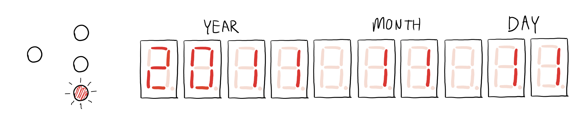

LIFECLO.CC v1 Manual
Congratulations, you are now the proud owner of your very own Lifeclo.cc.
May you spend the rest of your finite time wisely.
Try not to spend too much time ogling at how wondrous Lifeclo.cc is.
Overview
This is roughly what Lifeclo.cc looks like.
The colours may vary (depending on the stock I had)
And these are what the parts are if you’re interested.
Operation
Let’s take a closer look at the control panel at the top right of Lifeclo.cc.
There are three buttons and four indicator LEDs.
These are what you will use to control the clock.
Setting the date & time
Press and hold the SET button to go into set mode.
The SET MODE LED will light up.
The display will show the date, and one of the numbers will blink. This indicates the selected number.
Press the UP / DOWN buttons to increase or decrease the value of the number.
Press the SET button to go to the next number.
The clock will cycle through the different date/time components in this order:
DAY > MONTH > YEAR > HOUR > MINUTE > SECOND
To go back, press and hold the SET button again, or wait 15 seconds and it will automatically go back to the countdown mode.
Setting your birthday
Press and hold the UP button to go into birthday set mode.
The SET MODE & BDAY LED will light up.
Setting the birthday is the same as setting the date & time, but you will only have to set the date.
Pressing the SET button will cycle through the date components in this order:
DAY > MONTH > YEAR
To go back, press and hold the SET button again, or wait 15 seconds and it will automatically go back to the countdown mode.
Checking the time
Press the TIME/UP button. Pressing it again will go back to countdown mode, or it will go back after 5 seconds.
Checking the date
Press the DATE/DOWN button. Pressing it again will go back to countdown mode, or it will go back after 5 seconds.
Changing the brightness
Turn the brightness knob clockwise to increase brightness, turn it anti clockwise to decrease the brightness.
Power
Lifeclo.cc requires wall socket power. Think of it as a desk clock. It is not battery powered, though you can bring it around and power it with a power bank if you want to show it off to everyone.
It has a clock unit that has a CR2032 battery which can last a few years. This is similar to the battery in your computer that helps keep time in the event of a power loss. If that happens and the battery runs out, all you have to do is to replace the battery and set the time again. Similar to losing power on your watch, for instance.
To replace the battery, you may need a flat head screwdriver to get the battery out.
Usage
Conversational piece
People are going to ask about it. This is a great time to segue your conversation into human mortality.
Motivational piece
Ever been stuck watching TV for hours on end? Just stick this on the top of your TV and see your seconds tick by. Remember you only have that many seconds left to do something with life.
Existential pondering
“Why do we even exist?” “What is the meaning of everything?” “2 billion seconds is so little compared to the age of civilisations or the planet” are good places to start.
Advanced Usage
Lifeclo.cc is teensy powered, meaning you can reprogram it to do whatever you want. I know I promised source code and instructions on this page but it's not done. I'll get it up when I get to it.
FAQ
How does it know how much time I have left?
You set your birthday and current time, and it assumes you have an 80 year lifespan.
What happens when I reach 80 years old?
The clock breaks and weird things happen.
If you do manage to keep this till you’re 80, you’ve won!
How do I set other variables like my gender?
You can’t.
Can I increase and decrease the lifespan?
Nope.
Why not?
The point of this is to have a reminder about how finite our life is, not to have an exact date of your demise. That means no option or temptation to change the end date. Each time you see the number, it will be a smaller one than the last time you saw it.
How do I set the time or my birthday?
Check the operation section of this manual?
How do I set an alarm?
You can’t.
How does it handle timezones?
It doesn’t.
Is there a remote control?
No.
Is there an app?
No.
Can it be connected to the Internet?
No.
This is quite useless.
That is not a question.
How do I contact you to shower you with praises?
Yes please. Shoot me an email at hello at lifeclo.cc and I might read it. No guarantees though.
Where do I send my complaints?
Preferably to your family or friends. But if you really need to, send one over to that email above.
How about suggestions?
Same deal as above.
Will you make it internet connected?
No, scope creep.